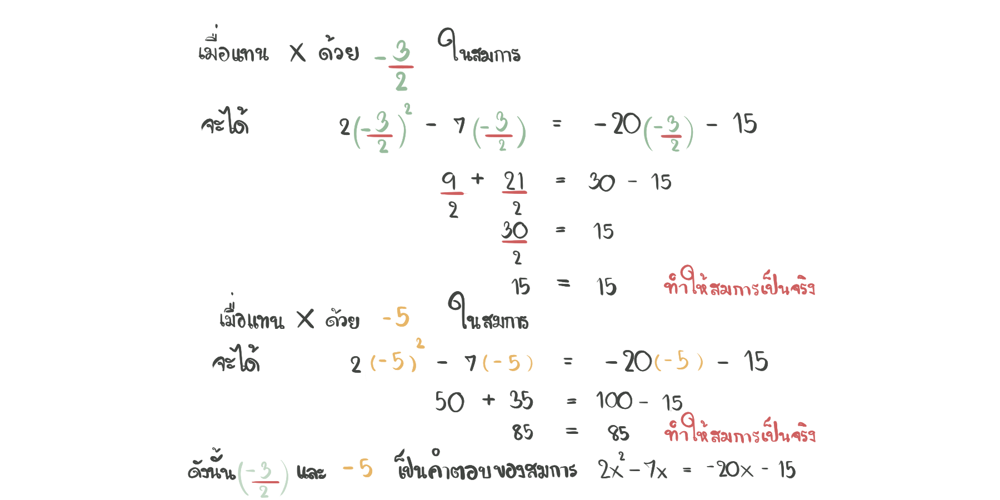

เรื่อง สมการกําลังสองตัวแปรเดียว
สมการกําลังสองตัวแปรเดียว
สมการกำลังสอง (quadratic equations) คือ สมการของพหุนามตัวแปรเดียวที่มีดีกรีเท่ากับ 2 บางครั้งเรียกสมการกำลังสองว่า สมการดีกรี 2 รูปแบบทั่วไปของสมการกำลังสอง คือ
การแก้สมการกำลังสอง หมายถึง การคำนวณเพื่อหาค่าของตัวแปร ซึ่งจะได้ค่าตัวแปร 2 ค่า โดยค่าทั้งสองอาจเท่ากันหรือไม่เท่ากันก็ได้
ค่าของตัวแปรที่ได้บางครั้งเรียกว่า รากของสมการ หรือ คำตอบของสมการ
สมบัติที่ใช้การแก้สมการกำลังสอง
ตัวอย่างที่ 1 เขียนสมการในแต่ละข้อให้อยู่ในรูปทั่วไปของสมการกำลังสองตัวแปรเดียว

คำตอบของสมการกำลังสองตัวแปรเดียว
คำตอบของสมการเชิงเส้นตัวแปรเดียว คือ จำนวนจริงใด ๆ ที่แทนตัวแปรสมการเชิงเส้นตัวแปรเดียวแล้วทำให้สมการเป็นจริง
ในทำนองเดียวกัน
ตัวอย่างที่ 2 พิจารณาว่าจำนวนที่อยู่ในวงเล็บ () ท้ายสมการ เป็นคำตอบของแต่ละข้อต่อไปนี้หรือไม่
การแก้สมการกำลังสองตัวแปรเดียว
คำตอบของสมการกำลังสองตัวแปรเดียว คือ จำนวนจริงใด ๆ ที่แทนตัวแปรสมการเชิงเส้นตัวแปรเดียวแล้วทำให้สมการเป็นจริง หาได้โดยวิธีการที่เรียกว่า การลองแทนค่าตัวแปรในสมการ
บางครั้งที่สมการกำลังสองตัวแปรเดียวซึ่ง a,b และ c เป็นจำนวนที่มีค่ามาก การหาคำตอบแบบแทนค่าตัวแปรนั้นอาจจะใช้เวลามากเกินไป จึงจะหาจำนวนที่มาแทนค่าตัวแปรแล้วทำให้สมการเป็นจริง
จึงมีการใช้วิธีอื่นซึ่งสะดวกในการหาคำตอบของสมการ เรียกว่า วิธีการ
"การแยกตัวประกอบของพหุนาม" และใช้คุณสมบัติของจำนวนจริง ดังนี้

การแก้สมการกำลังสองตัวแปรเดียวโดยใช้การแยกตัวประกอบของพหุนาม
การแยกตัวประกอบของพหุนามดีกรีกำลังสองในรูปแบบ ax^2 + bx + c เมื่อ a,b และ c เป็นจำนวนเต็ม โดยที่ a ≠ 0 โดยเขียนให้อยู่ในรูปแบบ (mx + p) (nx + q)
โดยที่ m,n,p และ q เป็นจำนวนเต็ม ซึ่งการหาคำตอบของสมการกำลังสองตัวแปรเดียวในหัวข้อนี้ ต้องใช้ความรู้เกี่ยวกับการแยกตัวประกอบพหุนามดีกรีกำลังสองและสมบัติของจำนวนจริง
ตัวอย่างที่ 3 แก้สมการในแต่ละข้อ
ตัวอย่างที่ 4 แก้สมการในแต่ละข้อ
ตัวอย่างที่ 5 แก้สมการในแต่ละข้อ

การนำความรู้เกี่ยวกับสมการกำลังตัวแปรเดียวไปใช้ในการแก้ปัญหา
ในหัวข้อนี้จะนำความรู้ที่ผ่านมามาแก้ปัญหาต่าง ๆ เช่น ปัญหาเกี่ยวกับจำนวน เกี่ยวกับพื้นที่และความยาวรอบรูป ปัญหาระยะทาง อัตราเร็วและเวลา ซึ่งมีขั้นตอนการแก้โจทย์ปัญหา ดังนี้
1. วิเคราะห์โจทย์ปัญหาเพื่อพิจารณาว่า โจทย์กำหนดอะไรมาบ้างและต้องการหาอะไร
2. กำหนดตัวแปรแทนสิ่งทีโจทย์ต้องการให้หาค่า
3. พิจารณาเงื่อนไขที่แสดงการเท่ากันตามที่โจทย์กำหนด จึงนำมาเขียนสมการ
4. แก้สมการเพื่อหาคำตอบของสิ่งที่โจทย์ต้องการ
5. ตรวจสอบความสมเหตุสมผลของคำตอบ
ตัวอย่างที่ 6
ตัวอย่างที่ 7